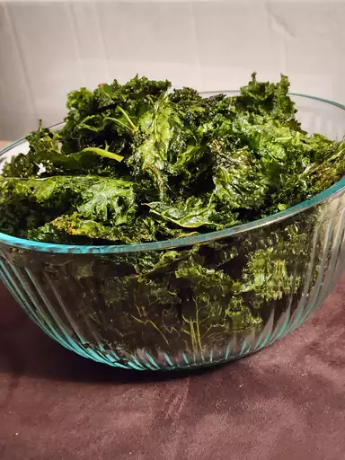

Kale Chips

Description
These crispy oven-baked kale chips are a great homemade snack. You cannot stop at just eating one, just like potato chips. Great for parties, too.
Ingredients
- 1 bunch kale
- 1 tablespoon olive oil
- 1 teaspoon flaked sea salt
Steps
- Gather all ingredients.
- Preheat an oven to 300 degrees F (150 degrees C). Line a rimmed baking sheet with parchment paper.
- With a knife or kitchen shears carefully remove kale leaves from the thick stems and tear into bite size pieces.
- Wash and thoroughly dry kale with a salad spinner.